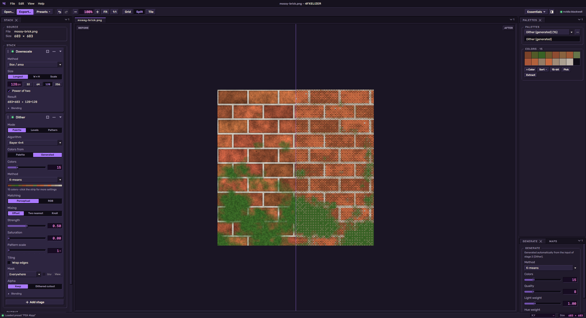
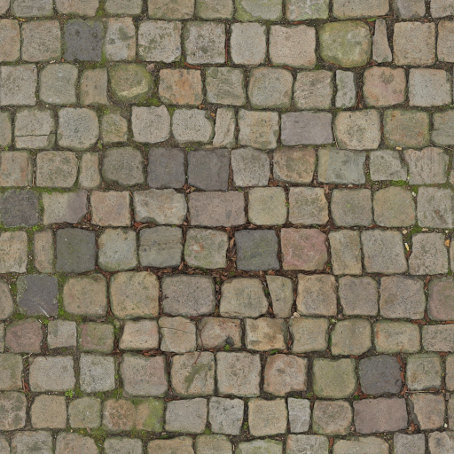
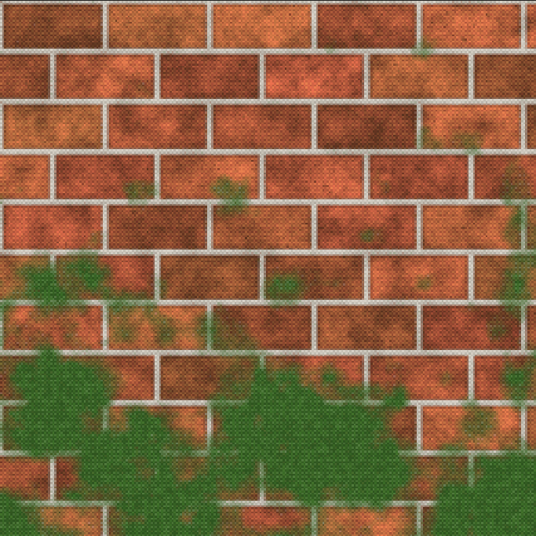
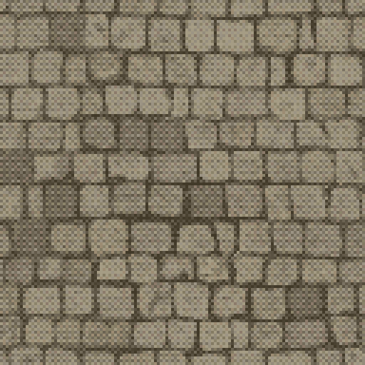
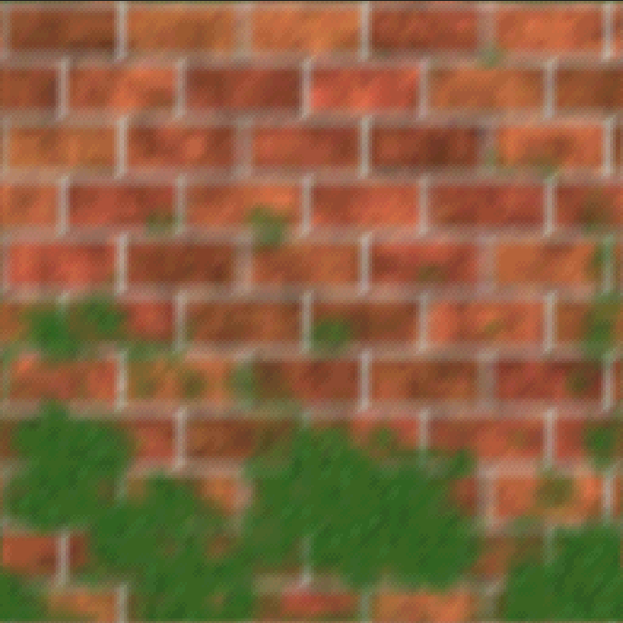
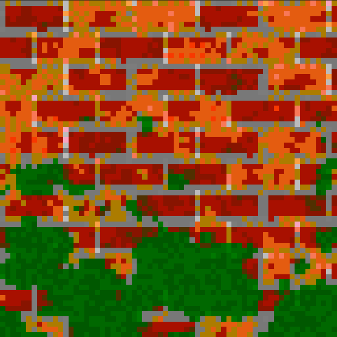
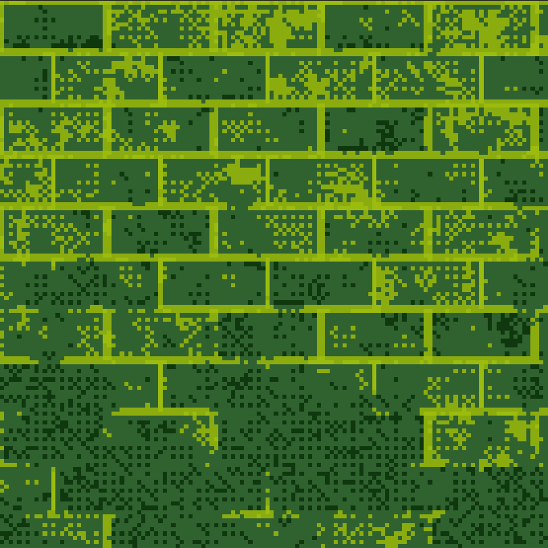
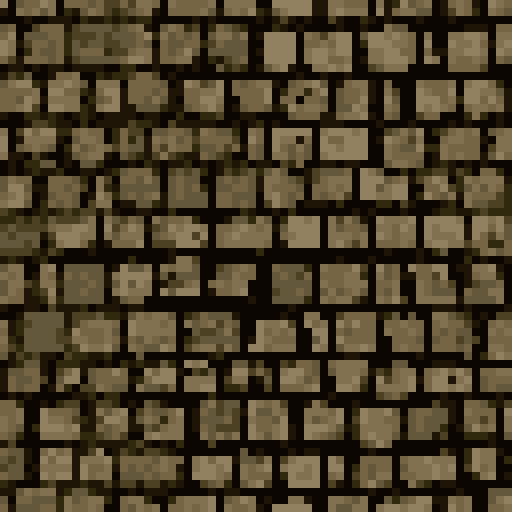

Big textures in. Small, palettized, dithered out. A desktop app for artists that turns high-res textures into crunchy PSX-era ones, live on the GPU.

Drop in a texture, tweak a few sliders, export. No setup, no scripting.
Build the look step by step, like adjustment layers. Reorder anything, preview any step.
Every classic pattern, from Bayer to Floyd–Steinberg, or bring your own.
Choose where the dither goes: shadows, edges, or your AO and cavity maps.
See the texture on your model, wobble and warping included.
No AO map? Bake one from the model, right on your GPU.
Grab colors from the image or start from NES, Game Boy, PICO-8 and friends.
PSX, N64, Game Boy and more in one click. Save and share your own.
PNG, TGA or BMP, full color or indexed, ready for your engine.
Everything runs on the GPU, so every slider updates live.
Dockable panels, five themes, and a tiling view to catch seams.
The same source run through the built-in presets.







Needs a GPU with WebGPU support. Windows 11 is the verified platform so far; macOS and Linux builds are produced by CI and feedback is welcome.
Build from source:
$ git clone https://github.com/forfex/4fxelizer.git
$ cd 4fxelizer
$ npm install
$ npm run dev